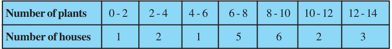
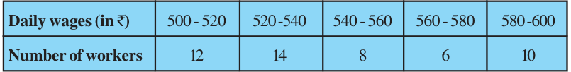
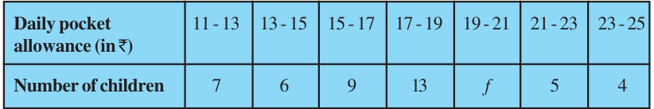
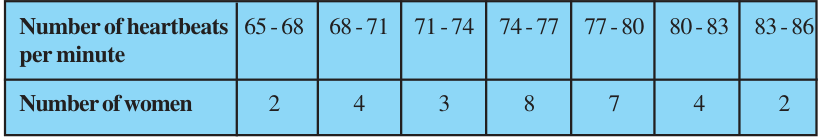
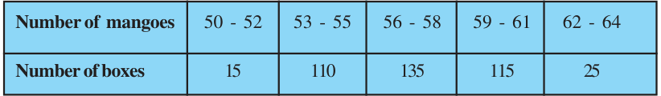
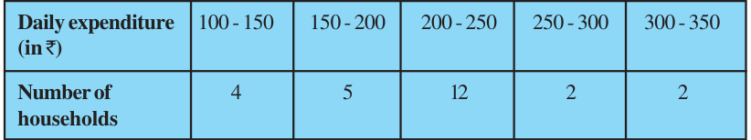
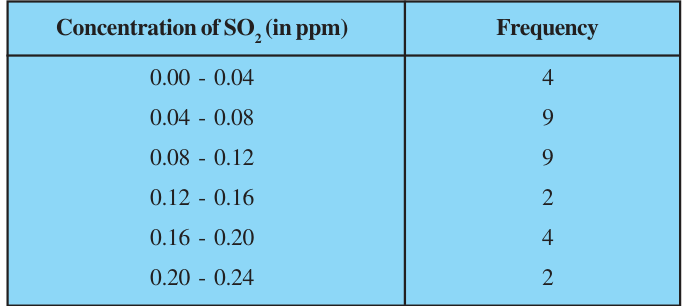
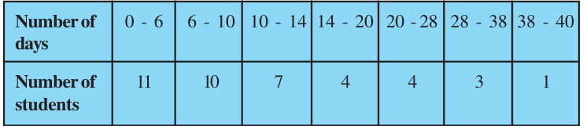
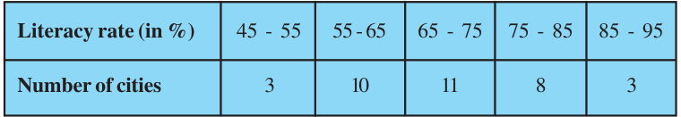

EXERCISE 13.1
- 1.A survey was conducted by a group of students as a part of their environment awareness programme, in which they collected the following data regarding the number of plants in 20 houses in a locality. Find the mean number of plants per house.

Which method did you use for finding the mean, and why?
- 2.Consider the following distribution of daily wages of 50 workers of a factory.

Find the mean daily wages of the workers of the factory by using an appropriate method.
- 3.The following distribution shows the daily pocket allowance of children of a locality. The mean pocket allowance is Rs 18. Find the missing frequency f.

- 4.Thirty women were examined in a hospital by a doctor and the number of heartbeats per minute were recorded and summarised as follows. Find the mean heartbeats per minute for these women, choosing a suitable method.

- 5.In a retail market, fruit vendors were selling mangoes kept in packing boxes. These boxes contained varying number of mangoes. The following was the distribution of mangoes according to the number of boxes.

Find the mean number of mangoes kept in a packing box. Which method of finding the mean did you choose?
- 6.The table below shows the daily expenditure on food of 25 households in a locality.

Find the mean daily expenditure on food by a suitable method.
- 7.To find out the concentration of \(\text{SO}_{2}\) in the air (in parts per million, i.e., ppm), the data was collected for 30 localities in a certain city and is presented below:

Find the mean concentration of \(\text{SO}_{2}\) in the air.
- 8.A class teacher has the following absentee record of 40 students of a class for the whole term. Find the mean number of days a student was absent.

- 9.The following table gives the literacy rate (in percentage) of 35 cities. Find the mean literacy rate.
